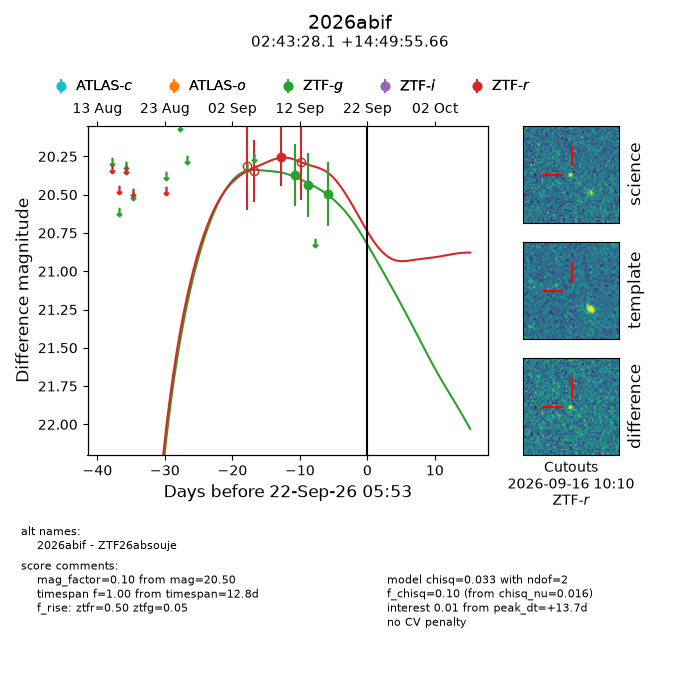
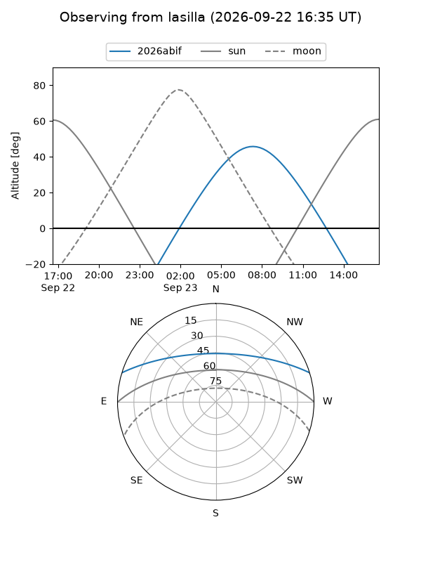
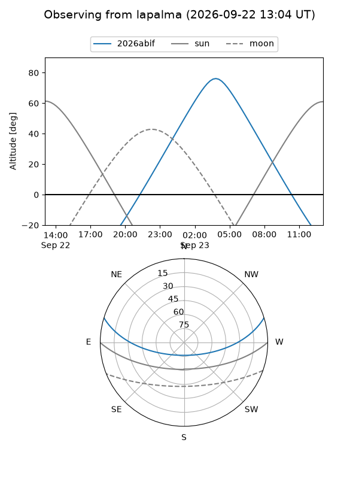
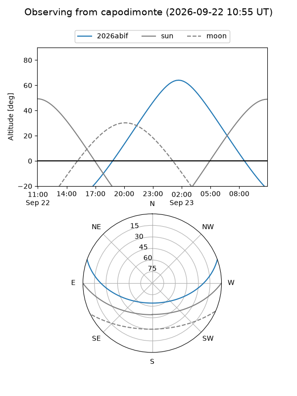
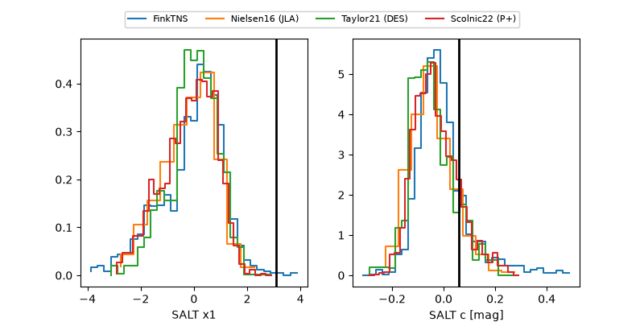

2026abif
Target 2026abif at 2026-09-22 17:20
Aliases and brokers:
FINK-ZTF: ztf.fink-portal.org/ZTF26absouje
Lasair-ZTF: lasair-ztf.lsst.ac.uk/objects/ZTF26absouje
ALeRCE-ZTF: alerce.online/object/ZTF26absouje
YSE-PZ: ziggy.ucolick.org/yse/transient_detail/2026abif
TNS name: wis-tns.org/object/2026abif
Direct TNS query: direct search
alt names
ZTF26absouje (ztf,fink_ztf)
2026abif (tns,yse)
Coordinates:
equatorial (ra, dec) = 40.8671,+14.83213
equatorial (HMS+DMS) = 02:43:28.09,+14:49:55.66
galactic (l, b) = (159.2750,-40.00465)
Flags:
TNS type: nan
peak dt: +14.1
Photometry:
last ztfg=20.50, ztfr=20.25
3 ztfg, 1 ztfr detections
Lightcurve

Visibility



Additional plots
